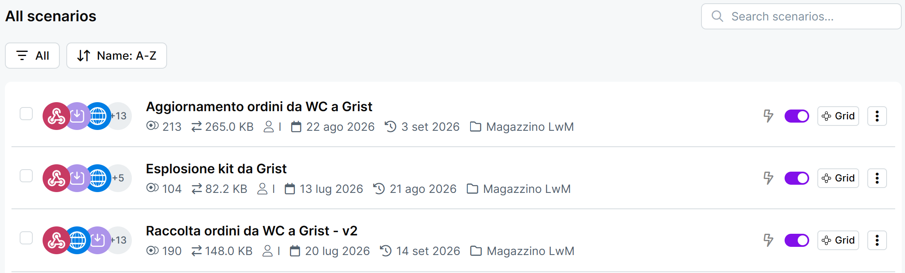
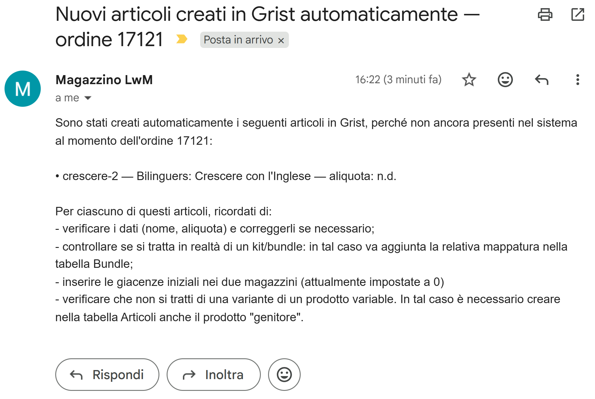
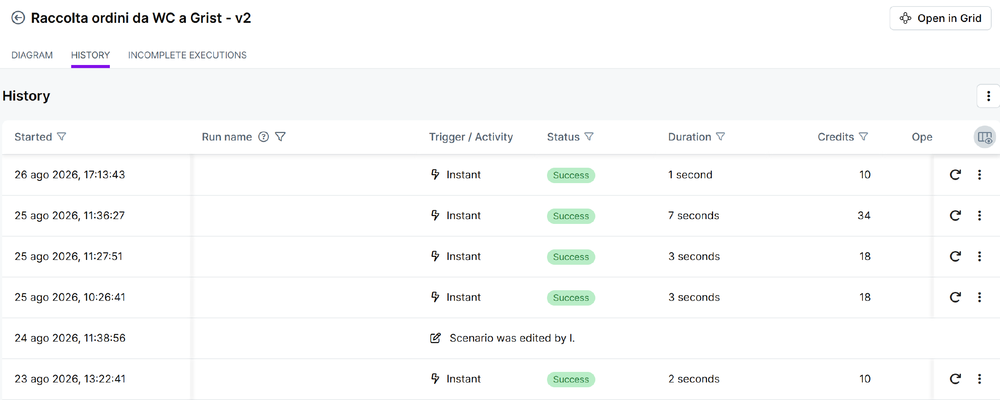

Guida 2
Gli automatismi (Make)
Versione dell'11/09/2026 · Sistema «Magazzino LwM»
La guida 0 dice che esistono tre automatismi e cosa fanno in mezza pagina. Questa dice il resto: quando partono davvero, cosa scrivono, cosa non fanno, e cosa ti chiedono quando ti scrivono.
Non è una guida su Make. È una guida su cosa succede mentre non stai guardando.
§1 In breve
Make è il programma che tiene insieme WooCommerce e Grist. Ci lavorano tre automatismi, e girano da soli: nella maggior parte dei mesi non avrai motivo di aprirlo.
Quello che serve sapere si riduce a tre domande, e questa guida serve a saper rispondere a quelle:
- È arrivato? — un ordine è finito in Grist oppure no.
- Cosa mi chiede questa mail? — ne esistono tre, e solo una chiede un lavoro ordinario.
- È fermo? — riconoscere un automatismo spento, prima che si accumulino i giorni.
Una frase che vale per tutti e tre, e che torna in ogni guida: gli automatismi copiano, non giudicano. Prendono quello che trovano su WooCommerce e lo scrivono in Grist. Se quello che trovano è sbagliato, lo scrivono sbagliato, senza segnalare nulla.
Se di questa guida ricordi una cosa sola, ricorda questa: il silenzio non è una conferma.
§2 Cosa vedi quando apri Make
L'account Make è il tuo. Paolo lo usa come ospite: tu vedi tutto quello che vede lui, e in più ricevi delle notifiche che a lui non arrivano (ne parliamo alla sezione 8).
Aprendolo trovi tre scenari, che sono i tre automatismi. Portano nomi tecnici, un po' diversi da quelli che usiamo nelle guide:
| Come lo chiamiamo qui | Come si chiama in Make |
|---|---|
| Raccolta ordini | Raccolta ordini da WC a Grist - v2 |
| Aggiornamento ordini e resi | Aggiornamento ordini da WC a Grist |
| Esplosione kit | Esplosione kit da Grist |
Accanto a ciascuno c'è un interruttore. Acceso è l'unica condizione normale, per tutti e tre. Se ne trovi uno spento, qualcosa è successo: la guida 9 spiega cosa guardare e come riaccenderlo.
{kind=link}

I tre automatismi non partono da soli a orari fissi: ciascuno aspetta un fatto preciso.
IL FATTO CHE LO ACCENDE L'AUTOMATISMO COSA SCRIVE IN GRIST
───────────────────────── ────────────── ─────────────────────
Nasce un ordine
su WooCommerce ────────► Raccolta ordini ──────► Testata + righe
Articoli mancanti
Pezzi dei kit
Un ordine viene salvato Aggiornamento Cambio di stato
su WooCommerce ────────► ordini e resi ──────► Resi (righe negative)
(anche solo aperto e chiuso) │
│
│ (se il reso è un kit)
▼
Si accende una casella ────────► Esplosione kit ──────► Righe dei pezzi
in Grist del kit
Il terzo è l'unico che parte da Grist e non dal sito. Ed è anche l'unico che può essere acceso da un altro automatismo: quando torna indietro un kit, il secondo accende la casella e il terzo si mette al lavoro.
§3 Raccolta ordini
Quando parte. Appena un ordine nasce su WooCommerce. Una volta sola: dopo averlo scritto, questo automatismo non torna più su quell'ordine.
Cosa scrive in Grist.
- La testata dell'ordine e tutte le sue righe.
- Gli articoli che ancora non esistono in anagrafica. Ne scrive il nome e l'aliquota e li segna come creato da Make e come da verificare. Tutto il resto lo lascia vuoto, comprese le date delle giacenze. Poi ti manda una mail (sezione 6).
- Le righe dei pezzi, se nell'ordine c'è un kit.
Cosa non fa.
- Non assegna il magazzino: quello resta il tuo primo intervento, su ogni ordine.
- Non completa gli articoli che crea: prezzo di listino, serie, tipo di variante, genitore, virtuale e date delle giacenze nell'ordine non ci sono (guida 5).
- Non riconosce un kit la cui ricetta non esiste ancora: scrive la riga del kit senza i pezzi, e nessuna pagina lo segnala (guida 5).
- Non distingue un ordine di un rappresentante da uno diretto. (comportamento atteso, non ancora verificato sul campo: manca un ordine vero da rappresentante su cui leggere come WooCommerce trasmette l'informazione)
- Non torna più sull'ordine. Tutto quello che succede dopo è affare del secondo automatismo.
Come ti accorgi che ha lavorato. L'ordine compare in Ordini Aperti nel giro di qualche minuto, con la casella arancione del magazzino da compilare.
§4 Aggiornamento ordini e resi
Quando parte. A ogni salvataggio di un ordine su WooCommerce. È il più operoso dei tre e, quasi sempre, non fa niente: WooCommerce lo avvisa anche quando apri un ordine e lo richiudi senza cambiare nulla. Un'esecuzione in cui non succede niente è il caso più frequente e più sano.
Ogni volta che si sveglia, si fa quattro domande.
Un ordine è stato salvato su WooCommerce
│
▼
┌───────────────────────────────────────┐
│ Questo ordine c'è in Grist? │
└───────────────────────────────────────┘
│ │
NO │ │ SÌ
▼ ▼
┌──────────────────┐ ┌──────────────────────────┐
│ Lo stato è │ │ Lo stato è cambiato? │
│ riconoscibile? │ │ │
└──────────────────┘ └──────────────────────────┘
│ │ │ │
SÌ │ │ NO SÌ │ │ NO
▼ ▼ ▼ ▼
✉️ «Ordine ✉️ «Stato Aggiorna lo non fa nulla
presente su ordine non stato in
WooCommerce riconosciuto» Grist
ma non su
Grist» ┌──────────────────────────┐
│ Ci sono rimborsi nuovi? │
└──────────────────────────┘
│ │
SÌ │ │ NO
▼ ▼
Scrive il reso non fa nulla
Due cose che questa figura non mostra e che vale la pena sapere:
- Le domande sullo stato e sui rimborsi si fanno tutte e due. Un rimborso che porta l'ordine a «Rimborsato» fa scattare entrambe le risposte nella stessa esecuzione, ed è giusto così: cambia lo stato e nasce il reso.
- L'avviso sull'ordine mancante non scatta subito. C'è un margine di dieci minuti dalla creazione dell'ordine, perché nei primi istanti è normale che l'ordine non sia ancora in Grist: il primo automatismo ci sta ancora lavorando.
Cosa scrive quando c'è un reso. Crea un record di tipo Reso, collegato all'ordine originale, con le righe in negativo. Tre dettagli che spiegano cose che a schermo sembrano strane:
- La data è quella del rimborso, non quella dell'ordine. Un ordine di marzo rimborsato a maggio produce un reso datato maggio, ed è corretto: il rimborso pesa sul periodo in cui è avvenuto.
- Il magazzino e i dati fiscali vengono ereditati dall'ordine originale. Non devi riassegnarli.
- Se il reso riguarda un kit, accende la casella dell'esplosione, così il terzo automatismo scrive i pezzi in negativo.
Cosa non fa.
- Non crea ordini nuovi: se un ordine non è in Grist, ti avvisa e basta.
- Non si accorge di un ordine cancellato o messo nel cestino su WooCommerce. Anzi: gli ordini cestinati vengono ignorati di proposito, per non riempire la casella di avvisi inutili. È il motivo per cui un ordine sbagliato si porta su «Annullato».
- Non decide se la merce è rientrata. La legge da WooCommerce, se c'è, altrimenti aspetta te.
Come ti accorgi che ha lavorato. Lo stato dell'ordine in Grist corrisponde a quello sul sito, e dopo un rimborso compare un nuovo record di tipo Reso.
§5 Esplosione kit
Quando parte. Da Grist, non dal sito, e in due modi:
- da solo, quando il secondo automatismo registra il reso di un kit;
- a mano, quando sei tu ad accendere la casella dell'esplosione su una riga: succede con i kit inseriti a mano in un ordine, con un kit che ha venduto prima di avere la sua ricetta, oppure quando un'esplosione non è andata a buon fine. Il gesto è nella guida 3 (dentro un ordine) e nella guida 5 (il kit senza ricetta).
Cosa scrive. Le righe dei pezzi che compongono il kit, prese dalla ricetta nella tabella Bundle, con lo stesso segno della riga da cui nascono: positive se il kit è stato venduto, negative se è stato reso. Poi accende la casella kit esploso, che serve a non farlo due volte.
Cosa non fa. Non riguarda i kit già esplosi dagli altri due automatismi. E soprattutto: non manda nessuna mail. È l'unico dei tre senza voce, quindi è l'unico per cui il silenzio non dice proprio niente.
Come ti accorgi che ha lavorato. Sotto la riga del kit compaiono le righe dei pezzi, e la casella kit esploso risulta accesa. Se la casella dell'esplosione è accesa ma quella di kit esploso no, e i pezzi non ci sono, l'esplosione non è avvenuta: guida 9.
Serve a vedere in un colpo solo come i tre automatismi si passano il lavoro. L'esempio è un kit «Set 3 libri» composto da tre titoli.
MARZO — il cliente compra il kit
────────────────────────────────
Raccolta ordini scrive: Ordine #1042
└─ Set 3 libri +1 ← con il suo prezzo
├─ Libro A +1 ← pezzi, prezzo 0
├─ Libro B +1
└─ Libro C +1
Il magazzino si scarica sui tre libri. Sul kit, no: il kit non ha giacenza.
MAGGIO — il cliente rende il kit e viene rimborsato
──────────────────────────────────────────────────
Aggiornamento scrive: Reso (collegato a #1042, data: maggio)
└─ Set 3 libri −1
│
│ accende la casella dell'esplosione
▼
Esplosione kit scrive: ├─ Libro A −1
├─ Libro B −1
└─ Libro C −1
Il magazzino si ricarica sui tre libri — ma solo quando la merce
risulta rientrata. Fino ad allora le righe restano lì, senza contare.
Il punto da portarsi via: quando c'è un kit di mezzo, il lavoro è diviso fra due automatismi. Se il secondo funziona e il terzo no, in Grist trovi il reso del kit senza i suoi pezzi — e siccome il kit non ha giacenza, il magazzino non si muove di un pezzo. La pagina Resi di kit da esplodere esiste per intercettare esattamente questo, e va guardata prima di chiudere i resi del mese.
§6 Le tre mail
Arrivano da «Magazzino LwM» e le ricevete in tre: tu, Virginia e Paolo. È la configurazione del periodo di collaudo, pensata perché nessun avviso resti senza qualcuno che lo legga.
| Nell'oggetto leggi… | Cos'è successo | Cosa devi fare |
|---|---|---|
| Nuovi articoli creati in Grist automaticamente | Un ordine conteneva prodotti non ancora in anagrafica, che sono stati creati con i dati minimi | Completarli. È l'unica mail di lavoro ordinario |
| ⚠️ Ordine … presente su WooCommerce ma non su Grist | Un ordine non è mai arrivato in Grist | Recuperarlo, o segnalarlo |
| ⚠️ Stato ordine non riconosciuto | È arrivato uno stato che il sistema non sa tradurre | Girarla a Paolo |
«Nuovi articoli creati in Grist automaticamente»
È l'unica delle tre che descrive una cosa normale. La mail elenca gli articoli creati, uno per riga, con SKU, nome e aliquota, e ricorda cosa manca: verificare nome e aliquota, aggiungere il prezzo di listino, controllare se si tratta in realtà di un kit, inserire le giacenze iniziali nei due magazzini, e verificare se è la variante di un prodotto che ha bisogno anche del suo «genitore».
Il come si fa è nella guida 5. Qui bastano tre avvertenze di lettura:
- «aliquota: n.d.» non vuol dire che manchi il dato. Vuol dire che sul sito il prodotto ha l'aliquota ordinaria, il 22%, che su WooCommerce non ha un codice proprio — oppure che è una variante. In Grist troverai l'aliquota vuota, o
parentse è una variante: in entrambi i casi va controllata e scelta, anche quando è davverostandard. Se quel prodotto è un libro in Art.74, è il caso da sistemare per primo. - Le giacenze sono a zero e le date sono vuote. Non è la giacenza reale, è l'assenza di un dato. E l'errore arriva subito: finché non inserisci le date, le colonne del venduto di quell'articolo vanno in errore appena l'articolo compare in una riga d'ordine — cioè immediatamente, visto che è stato proprio un ordine a crearlo.
- Se l'articolo nuovo è un kit, l'ordine che l'ha fatto nascere non è stato esploso: dopo aver creato la ricetta, l'esplosione su quella riga la accendi tu (guida 5).
Gli articoli in attesa restano marcati da verificare in anagrafica, quindi anche se la mail si perde il lavoro non si perde.
{kind=link}

⚠️ «Ordine … presente su WooCommerce ma non su Grist»
Il primo automatismo non ha registrato quell'ordine e qualcuno, più tardi, ha toccato l'ordine sul sito: è a quel punto che il secondo se n'è accorto. La mail riporta data, stato, totale e cliente, così puoi ritrovarlo.
Le vie sono due: reinserire l'ordine a mano in Grist (guida 3), oppure segnalarlo a Paolo perché rilanci l'esecuzione fallita. Se l'ordine ha molte righe, la seconda è più rapida e più sicura.
Quello che conta è non lasciarlo lì: finché quell'ordine non è in Grist, la sua merce non risulta scaricata dal magazzino e le sue righe non entrano nei report del trimestre.
⚠️ «Stato ordine non riconosciuto»
Un ordine è arrivato con uno stato che il sistema non sa tradurre in italiano — succede quando su WooCommerce viene aggiunto uno stato nuovo, spesso da un plugin. Lo stato in Grist non è stato aggiornato ed è rimasto quello di prima.
Non è un lavoro tuo. È una modifica da fare dentro Make, e va a Paolo: giragli la mail così com'è, contiene già tutto quello che gli serve.
Nel frattempo l'ordine in Grist ha uno stato vecchio: se era «In lavorazione» e sul sito è passato a qualcos'altro, in Grist resta «In lavorazione». Vale la pena controllarlo, perché lo stato decide se quell'ordine entra nei report e muove il magazzino.
§7 Gli avvisi che manda Make stesso
Oltre alle tre mail, ce n'è un quarto tipo, di natura diversa: quando uno scenario sbaglia più volte di seguito, Make lo spegne da solo e avvisa l'intestatario dell'account.
L'intestatario sei tu. Paolo non riceve questi avvisi. Finché non glielo dici, per lui è come se non fosse successo niente.
Sono mail di Make, in inglese, e sono facili da scambiare per pubblicità del servizio. Se ne arriva una, la sequenza è: guarda se lo scenario è spento, riaccendilo se te la senti (guida 9), e avvisa Paolo comunque — anche se sembra tutto tornato a posto, perché uno scenario che si spegne da solo ha una causa che va guardata.
§8 Come si vede se ha funzionato
Prima in Grist, sempre. È lì che stanno le cose che ti interessano, ed è il controllo che risponde alla domanda vera. L'ordine c'è? Cercalo per numero in Ordini. Il reso è comparso? Guarda in Ordini o nella pagina dei resi.
Poi in Make, se serve. Ogni scenario ha una cronologia delle esecuzioni: una riga per volta, con l'esito. Serve per rispondere a «l'automatismo ha girato o è fermo da tre giorni?».
Due cose da sapere per leggerla senza spaventarsi:
- Tante esecuzioni in cui non è successo niente sono normali, soprattutto sul secondo automatismo. Non sono errori.
- Verde vuol dire «è arrivato in fondo», non «i dati sono giusti». Un'esecuzione può concludersi bene avendo copiato un dato sbagliato: gli automatismi copiano, non giudicano.
{kind=link}

Sui consumi non c'è da preoccuparsi. Make conta le operazioni e il piano attivo ne comprende diecimila al mese: con il volume di ordini attuale, poco più di duecento all'anno, ne restano largamente in avanzo anche contando tutte le volte in cui il secondo automatismo gira a vuoto. Se un giorno il volume crescesse molto, è una cosa da rivedere — non oggi.
Un'ultima cosa, che serve solo a sapere che esiste: quando un'esecuzione si interrompe a metà, Make la mette da parte invece di buttarla, su tutti e tre gli scenari. Vuol dire che una cosa rimasta a metà si può riprendere invece di essere rifatta a mano. Come si fa è nella guida 9.
§9 Cosa gli automatismi non fanno
Non è l'elenco dei limiti del sistema, che sta nella guida 0. Sono le cose che sembrano dover arrivare da un automatismo e non arrivano.
| Te lo aspetteresti da… | E invece |
|---|---|
| Raccolta ordini — che assegni il magazzino | Non lo fa nessuno: è il tuo primo intervento su ogni ordine (guida 3) |
| Raccolta ordini — che completi i nuovi articoli: prezzo di listino, varianti, virtuale, date delle giacenze | Nell'ordine non ci sono. Li metti tu (guida 5) |
| Raccolta ordini — che esploda un kit la cui ricetta non esiste ancora | Scrive la riga del kit senza pezzi, e nessuna pagina lo segnala. Crei la ricetta e accendi l'esplosione a mano (guida 5) |
| Aggiornamento — che si accorga di un ordine cancellato | Le cancellazioni non arrivano. Si annulla, non si cancella |
| Aggiornamento — che veda un rimborso di solo importo | Il reso nasce senza righe e non compare in nessun report. Lo intercetta la pagina Resi senza righe (guida 4) |
| Aggiornamento — che decida se la merce è tornata | La legge da WooCommerce se c'è; altrimenti la decisione è tua (guida 4) |
| Aggiornamento — che recepisca una modifica alle righe di un ordine | Arrivano solo lo stato e i rimborsi. Quantità, prezzi e righe aggiunte o tolte no: si rifanno a mano in Grist (guida 3) |
| Qualcuno — che aggiorni le disponibilità sul sito quando vendi offline | Non esiste. Le giacenze di Grist restano in Grist |
| Qualcuno — che copi in Grist le modifiche al catalogo del sito | Non esiste. Ogni prodotto nuovo o dato corretto sul sito va riportato in Articoli (guida 5) |
| Qualcuno — che registri i carichi di magazzino | Interamente a mano (guida 6) |
| Qualcuno — che confronti gli ordini del sito con quelli di Grist | Nessun automatismo lo fa. È un confronto che si fa a mano quando si chiudono i report del trimestre, raccomandato per i primi due (guida 9) |
| Qualcuno — che distingua gli ordini dei rappresentanti | Il campo del canale è uguale per tutti, per ora |
| Qualcuno — che registri uno spostamento fra magazzini | Non esiste. È un record che inserisci tu, di tipo Altri movimenti (guida 3) |
| Make — la chiusura di un reso senza rientro | Non passa da Make: è una casella in Grist, e la trovi solo lì (guida 4) |
§10 Attenzione a
Cercare in Make una cosa che sta in Grist. Le due caselle dei resi, l'assegnazione del magazzino, i carichi: nessuna di queste passa dagli automatismi. In Make non c'è niente da cercare e niente da sistemare.
Aprire un modulo per capire com'è fatto. È il gesto più innocuo che c'è e il più rischioso di questa guida: non chiede conferme, non lascia tracce visibili, e il danno si manifesta come numero sbagliato giorni dopo.
Prendere il verde per una garanzia. Dice che l'automatismo è arrivato in fondo. Non dice che ha scritto la cosa giusta.
Aspettare una mail che non arriverà. Il terzo automatismo non ne manda nessuna, e gli altri due tacciono se sono fermi. I controlli si fanno sui dati, non sulla casella di posta.
§11 Dove si continua
| Se vuoi… | Guida |
|---|---|
| Capire com'è fatto Grist sotto, e chi scrive ciascun campo | 1 |
| Assegnare il magazzino, correggere un ordine, inserire un kit a mano | 3 |
| Chiudere un reso, capire le due caselle e la spunta su WooCommerce | 4 |
| Completare un articolo creato in automatico, costruire un kit | 5 |
| Riaccendere uno scenario fermo, riautorizzare Gmail, segnalare un problema | 9 |